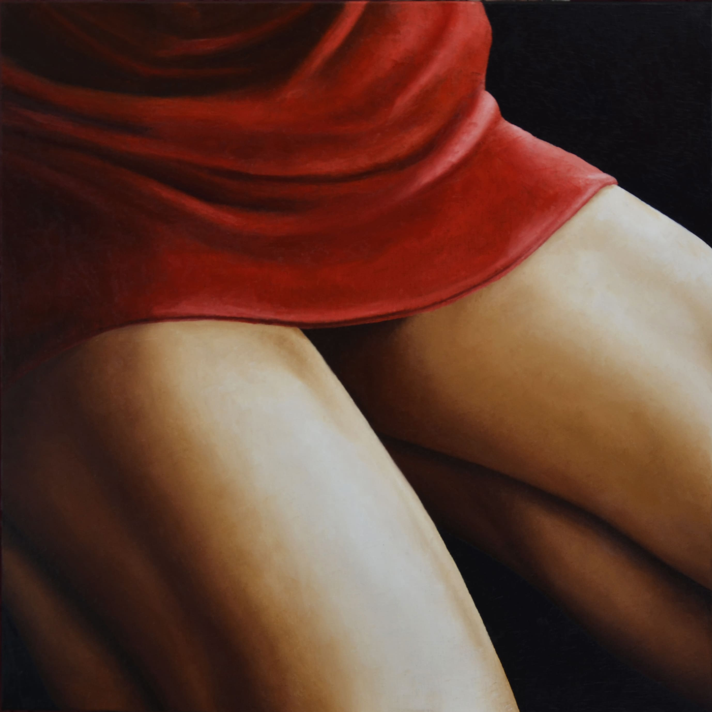

Close up
Rapsody Part 3
- Technique
- Huile sur Toile
- Dimensions
- 80 × 80 cm
- Année
- 2014
- Disponibilité
- Disponible
- Où la voir
- Atelier
« Rapsody Part 3 » est une œuvre d’Annick Bouvattier, réalisée en 2014 (huile sur toile, 80 × 80 cm). Elle fait partie de la collection « Close up ». Cette œuvre est disponible.
“Rapsody Part 3” is a work by Annick Bouvattier, created in 2014 (oil on canvas, 80 × 80 cm). It belongs to the “Close-up” collection. This work is available.
«Rapsody Part 3» es una obra de Annick Bouvattier, realizada en 2014 (óleo sobre lienzo, 80 × 80 cm). Forma parte de la colección «Primer plano». Esta obra está disponible.
«Rapsody Part 3» è un'opera di Annick Bouvattier, realizzata nel 2014 (olio su tela, 80 × 80 cm). Fa parte della collezione «Primo piano». Quest'opera è disponibile.
Demander des informations